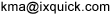

Ankündigung von Startpage: Ein neuer Name für die diskreteste Suchmaschine der Welt
Ixquick führt einen neuen und leichter zu merkenden Namen für seine Website ein
"Schützen Sie künftig Ihre Privatsphäre. Suchen Sie künftig mit Startpage."7. Juli 2009
So lautet der neue Slogan für Ixquick, die Suchmaschine für das Internet, die im Geschäftsleben als Suchmaschine mit den besten Datenschutzpraktiken weltweit gilt. Heute führt Ixquick die Website Startpage.com ein, um seinen Benutzer eine einfacher zu merkende Methode für den Zugriff auf die renommierten Suchdienste des Unternehmens bereitzustellen.
„Schon seit Jahren loben Datenschutzexperten Ixquick für unsere herausragende Geschäftspolitik, aber manche Benutzer fanden unseren Namen zu kompliziert“, so Robert Beens, der CEO von Ixquick. „Mit Startpage erhalten unsere Benutzer dieselben großartigen Funktionen wie zuvor von Ixquick, können diese aber künftig über einen einfacher zu merkenden Namen nutzen.“
Die Website Ixquick.com bleibt weiterhin zusätzlich zur neuen Option Startpage.com online. Beide Websites basieren auf derselben Suchtechnologie. Zudem gelten für beide dieselben zertifizierten Datenschutzrichtlinien und -praktiken.
„Diese beiden Websites sind fast identisch und bieten dieselben großartigen Suchergebnisse. Der einzige echte Unterschied besteht im Namen“, so Beens. „Ob unsere Benutzer nun lieber Startpage.com oder Ixquick.com benutzen, spielt keine Rolle: Sie haben in beiden Fällen die beruhigende Gewissheit, dass ihre Privatsphäre geschützt wird.“
Ixquick hat inzwischen viele treue Kunden unter den Internetbenutzern, die darauf Wert legen, dass für ihre Suchanfragen der Datenschutz gewährleistet wird. Alle anderen größeren Suchmaschinen einschließlich Google, Yahoo und Microsoft zeichnen jede einzelne Suchanfrage auf, die über ihre Websites erfolgt ist, und verknüpfen sie mit der IP-Adresse und den Cookies des Benutzers. Dies ist eine Geschäftspraxis, die seit einiger Zeit sowohl durch Datenschützer als auch Regierungsbehörden kritisiert wird.
Ixquick ist die einzige größere Suchmaschine, die garantiert, dass weder IP-Adressen noch Suchanfragen der Benutzer aufgezeichnet werden. Das Unternehmen weist diese Garantie über eine entsprechende Zertifizierung durch ein drittes Unternehmen nach und wurde mit dem prestigeträchtigen europäischen Datenschutz-Gütesiegel für die Einhaltung vorbildlicher Datenschutzstandards ausgezeichnet. Außerdem verwendet Ixquick keine so genannten „Tracking Cookies“ und ist die einzige größere Suchmaschine, die HTTPS unterstützt. Dabei handelt es sich um eine Sicherheitsfunktion, die ein „Abhören“ der Daten bei der Übertragung über das Internet verhindert.
Ixquick erhielt seinen Namen in den neunziger Jahren, als David Bodnick, der Unternehmensgründer und aktuelle Leiter der Technologieabteilung, sowohl Intelligenz als auch Geschwindigkeit zum Ausdruck bringen wollte. „Das „i“ in Ixquick soll für Intelligenz stehen, das „x“ für „mehrfach“ und „quick“ für Geschwindigkeit“, erläutert er. „Die Benutzer schätzen besonders, dass wir nicht nur die diskreteste Suchmaschine der Welt sind, sondern auch schnell unsere intelligenten Suchergebnisse bereitstellen.“
„Nachdem wir jetzt über ein Jahrzehnt lang hervorragende Suchergebnisse unter dem Namen Ixquick bereitgestellt haben, freuen wir uns nun, Startpage einzuführen“, so Beens. „Bedenken hinsichtlich der Privatsphäre haben dazu geführt, dass in der letzten Zeit viele neue Benutzer unsere Website besucht haben. Daher möchten wir es den Benutzern noch einfacher machen, uns zu finden und unser Angebot weiterzuempfehlen.“
Ixquick wird noch diesen Monat eine neue Werbekampagne zur Website Startpage.com auf den englischsprachigen Märkten starten, um auf dieses neue Angebot hinzuweisen.
Über Startpage (von Ixquick)Startpage von Ixquick ist eine preisgekrönte Suchmaschine mit branchenführenden Datenschutzrichtlinien. Ixquick wurde 1998 in New York gegründet und hat im Laufe der Jahre viele treue Kunden unter Computerbenutzern gefunden, denen Datenschutz und Sicherheit wichtig sind. Weitere Informationen zu Ixquick einschließlich Details zu den vorbildlichen Vorgehensweisen bei der Datenerfassung finden Sie unter www.ixquick.com.
Ansprechpartner für die Presse:
Dr. Katherine Albrecht
Medienbeziehungen und Marketinginitiativen in den USA
877-434-3100 [gebührenfrei in den USA]
+1 973-273-2125 [für internationale Anrufe]
